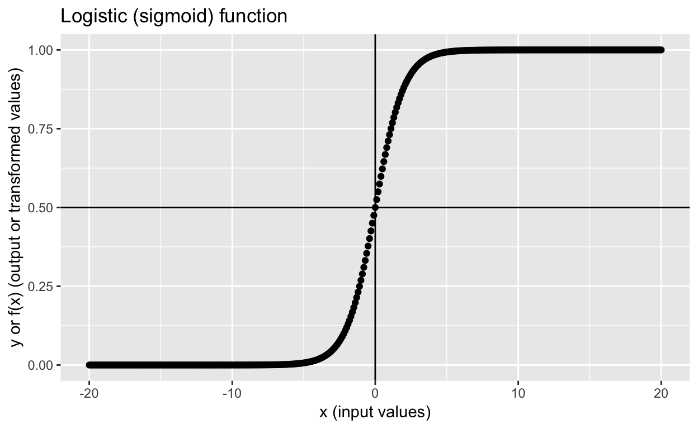
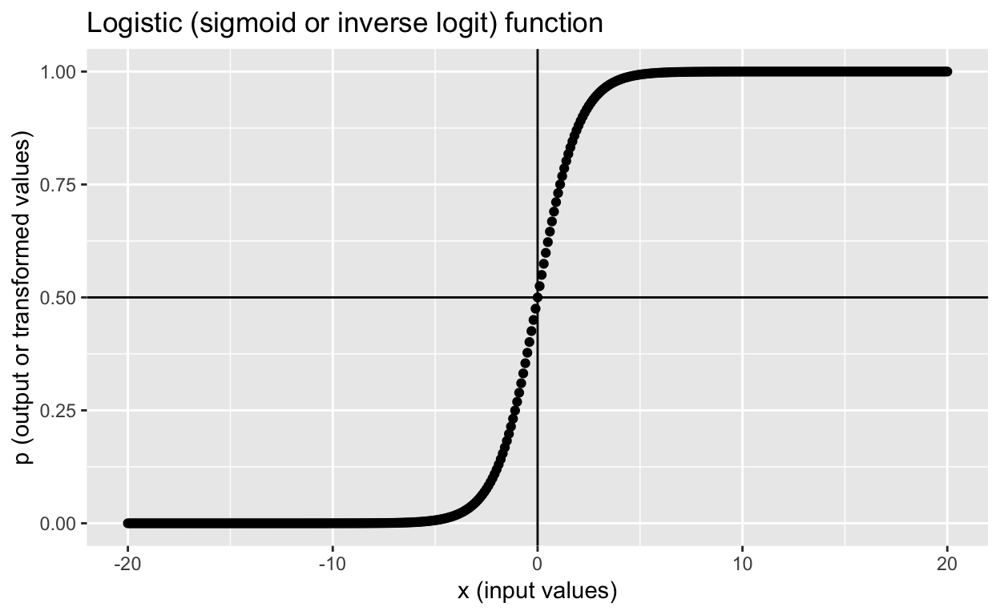
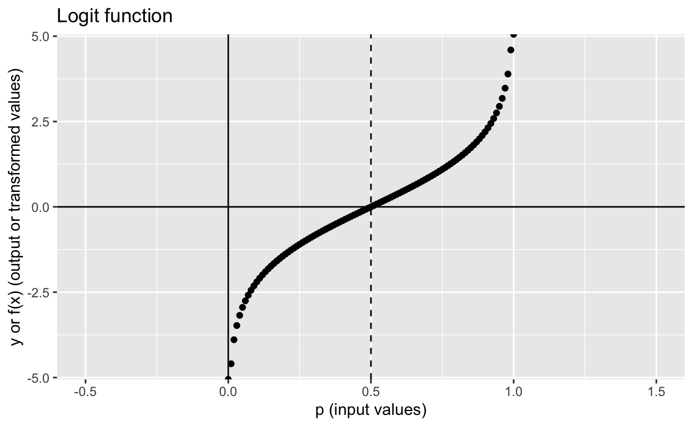
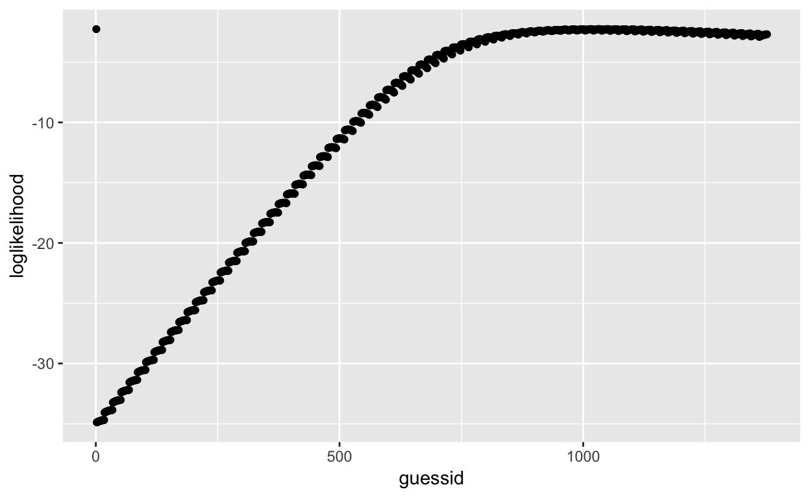

Table of Contents
Get source code for this RMarkdown script here.
Logistic regression (also known as classification in machine learning) is used to predict the probability of a categorical dependent variable. In logistic regression, the dependent variable is a binary variable that contains data coded as 1 (e.g., yes, success) or 0 (e.g., no, failure).
I have read many explanations and tutorials but haven’t found one that clearly explains how logistic regression, inverse logit and logit functions, and maximum likelihood estimation are related. I hope this tutorial will fill those gaps. If anything is unclear or wrong, let me know.
The principles underlying logistic regression are also relevant to decision making and choice models, machine learning, activation functions in neural networks, and many other things. So it’s good to understand the basic underlying principles really well.
library(tidyverse); library(data.table)Logistic (sigmoid or inverse logit) function
The logistic function (also known as sigmoid function or inverse logit function) is at the heart of logistic regression. Logistic function:
\[f(x)=\frac{1}{1+e^{-x}}\] Another formula for logistic function:
\[g(x)=\frac{e^{x}}{e^{x}+1}\] You can easily derive \(g(x)\) from \(f(x)\):
\[\frac{1}{1+e^{-x}}= (\frac{1}{1+e^{-x}}) * (\frac{e^{x}}{e^{x}}) =\frac{e^{x}}{e^{x}+1} \]
Define logistic (sigmoid) R functions:
logistic <- function(x) { # f(x)
1 / (1 + exp(-x))
}
logistic2 <- function(x) { # g(x)
exp(x) / (1 + exp(x))
}Let’s create a table to see how the logistic functions map input values -3, -2, -1, 0, 1, 2, 3 to output values.
tibble(x = -3:3, f_x = logistic(x), g_x = logistic2(x))
# A tibble: 7 x 3
x f_x g_x
<int> <dbl> <dbl>
1 -3 0.0474 0.0474
2 -2 0.119 0.119
3 -1 0.269 0.269
4 0 0.5 0.5
5 1 0.731 0.731
6 2 0.881 0.881
7 3 0.953 0.953 They are the same equations, so it’s not surprising that the output values of the two functions are exactly the same.
Here are more interesting input values:
logistic(-Inf) # -Inf -> 0
[1] 0
logistic(Inf) # Inf -> 1
[1] 1
logistic(0) # 0 -> 0.5, because exp(0) is 1, thus 1/(1+1)
[1] 0.5The logistic function, also called sigmoid function gives an ‘S’ shaped curve that can take any real-valued number (-\(\infty\) to \(+\infty\)) and maps it to value between 0 and 1.
tibble(x = seq(-20, 20, 0.1), y = logistic(x)) %>%
ggplot(aes(x, y)) + geom_point() +
geom_vline(xintercept = 0) + geom_hline(yintercept = 0.5) +
labs(x = "x (input values)",
y = "y or f(x) (output or transformed values)",
title = "Logistic (sigmoid) function")
Linear regression basics
Let’s create some simple data. Let x be the predictor and y become the outcome.
dt1 <- data.table(x = c(-5, -3, -1, 0, 1, 3, 5),# predictor x
y = c( 0, 0, 1, 0, 1, 1, 1)) # outcome y
dt1
x y
1: -5 0
2: -3 0
3: -1 1
4: 0 0
5: 1 1
6: 3 1
7: 5 1Let’s fit a simple linear regression to model y in terms of x. Note that using linear regression is wrong because y is categorical/binary (0s and 1s). But let’s fit the model regardless…
lm1 <- lm(y ~ x, dt1)
lm1
Call:
lm(formula = y ~ x, data = dt1)
Coefficients:
(Intercept) x
0.5714 0.1143 Based on these results, we’re saying we can model each y value (\(y_i\)) as a function of the corresponding x value (\(x_i\)), using this linear regression function:
\[y_i = \beta_0 + \beta_1x_i + \varepsilon_i\]
Matrix notation:
\[ \left(\begin{array}{cc} y_1\\ y_2\\ \vdots\\ y_n\\ \end{array}\right) = \left(\begin{array}{cc} 1 & x_1\\ 1 & x_2\\ \vdots & \vdots\\ 1 & x_n\\ \end{array}\right) \left(\begin{array}{cc} \beta_0\\ \beta_1 \end{array}\right) + \left(\begin{array}{cc} \ \varepsilon_1\\ \ \varepsilon_2\\ \vdots\\ \ \varepsilon_n \end{array}\right) \]
Let’s insert the fitted \(\beta_0\) and \(\beta_1\) values into the equation and then check whether we can map our x values to our y values correctly. \(\beta_0\) = 0.57 and \(\beta_1\) = 0.11.
First, let’s extract the beta coefficients from the model, which we can then use to calculate predicted values, \(\hat{Y}\).
# extract b0, b1 coefficients, residuals and save in dt1 (data.table syntax!)
dt1[, b0 := round(coef(lm1)[1], 4)]
dt1[, b1 := round(coef(lm1)[2], 4)]
dt1
x y b0 b1
1: -5 0 0.5714 0.1143
2: -3 0 0.5714 0.1143
3: -1 1 0.5714 0.1143
4: 0 0 0.5714 0.1143
5: 1 1 0.5714 0.1143
6: 3 1 0.5714 0.1143
7: 5 1 0.5714 0.1143Matrix notation is shown below. This notation is nice because it’s compact and no matter how many \(x\) variables (predictors) you have in your model, the form is still the same.
\[\hat{Y}=X \hat{\beta}\]
For example, row 3: x = -1:
\[\hat{y_3} = \beta_0 + \beta_1x_3 \] \[\hat{y_3} = 0.57 + 0.11 * -1\]
Let’s do it for all rows.
# map x values to y (predicted y or y_hat)
dt1[, y_hat := round(b0 + b1 * x, 4)] # predicted_y = b0 + b1*x
dt1
x y b0 b1 y_hat
1: -5 0 0.5714 0.1143 -0.0001
2: -3 0 0.5714 0.1143 0.2285
3: -1 1 0.5714 0.1143 0.4571
4: 0 0 0.5714 0.1143 0.5714
5: 1 1 0.5714 0.1143 0.6857
6: 3 1 0.5714 0.1143 0.9143
7: 5 1 0.5714 0.1143 1.1429To get the original \(Y\) values (0s and 1s), we add our predicted y values \(\hat{Y}\) to the residuals \(\varepsilon\).
\[Y=X\beta + \varepsilon\]
# save residuals in dt1
dt1[, resids := round(residuals(lm1), 4)]
dt1[, y2 := round(y_hat + resids, 2)] # y2 should be same as y
dt1
x y b0 b1 y_hat resids y2
1: -5 0 0.5714 0.1143 -0.0001 0.0000 0
2: -3 0 0.5714 0.1143 0.2285 -0.2286 0
3: -1 1 0.5714 0.1143 0.4571 0.5429 1
4: 0 0 0.5714 0.1143 0.5714 -0.5714 0
5: 1 1 0.5714 0.1143 0.6857 0.3143 1
6: 3 1 0.5714 0.1143 0.9143 0.0857 1
7: 5 1 0.5714 0.1143 1.1429 -0.1429 1The y and y2 values match exactly! We recreated our y values by using the beta coefficients, x values, and residuals.
For example, row 3: x = -1, y = 1, \(\varepsilon\) = 0.54:
\[y_3 = \beta_0 + \beta_1x_3 + \varepsilon_3\] \[y_3 = 0.57 + 0.11 * -1 + 0.54 = 1\]
From linear to logistic regression via the logistic function
Below is the logistic function (aka sigmoid function, inverse logit link function) again. Note I’ve replaced the \(x\) variable with the \(y\) variable and changed the function name from \(f\) to \(logistic\). Other than that, it’s the same equation as above.
\[logistic(y)=\frac{1}{1+e^{-y}}\]
Remember the matrix notation for the general linear model? It’s \(Y=X\beta\). In logistic regression, here’s what we’re trying to model:
\[logistic(X\beta)=\frac{1}{1+e^{-X\beta}}\] Or the other formula:
\[logistic(X\beta)=\frac{e^{X\beta}}{e^{X\beta}+1}\]
The input to the logistic function is now the predicted value \(Y=X\beta\).
Remember the logistic function returns continuous values ranging from 0 to 1, so \(Y=X\beta\) (can take on any value from \(-\infty\) to \(+\infty\)) will be map on to values between 0 and 1. Let’s illustrate this point again using the y_hat values from our linear regression. Note that what we’re doing here is wrong, because we’ve fitted a linear regression to the data when we should have fitted a linear regression. But I think it’s helpful for understanding conceptually what the logistic function is doing and how logistic regression works.
dt1[, logistic_yhat := logistic(y_hat)] # apply logistic function to y_hat
dt1 # compare the ranges of y_hat and logistic_yhat
x y b0 b1 y_hat resids y2 logistic_yhat
1: -5 0 0.5714 0.1143 -0.0001 0.0000 0 0.4999750
2: -3 0 0.5714 0.1143 0.2285 -0.2286 0 0.5568777
3: -1 1 0.5714 0.1143 0.4571 0.5429 1 0.6123260
4: 0 0 0.5714 0.1143 0.5714 -0.5714 0 0.6390862
5: 1 1 0.5714 0.1143 0.6857 0.3143 1 0.6650097
6: 3 1 0.5714 0.1143 0.9143 0.0857 1 0.7138793
7: 5 1 0.5714 0.1143 1.1429 -0.1429 1 0.7582117Each value in the logistic_yhat column tells you the probability of \(y\) equals 1, \(P(y_i = 1)\).
Inverse logit and logit functions
Here’s the inverse logit (aka logistic function or sigmoid function) again. Repetition is good… I’ve changed the left-hand side to \(p\), because the logistic (i.e., inverse logit) function takes inputs from \(-\infty\) to \(+\infty\) and maps those inputs into values ranging from 0 to 1, which are probability values, so \(p\) (probability) on the left-hand side makes sense too.
\[p=\frac{1}{1+e^{-y}}\]
To remind you how the inverse logit function above maps input values to output values again:
tibble(x = seq(-20, 20, 0.1), y = logistic(x)) %>%
ggplot(aes(x, y)) + geom_point() +
geom_vline(xintercept = 0) + geom_hline(yintercept = 0.5) +
labs(x = "x (input values)", y = "p (output or transformed values)",
title = "Logistic (sigmoid or inverse logit) function")
What is the logit function? It’s the “opposite” or the inverse of the inverse logit function above (inverse-inverse means you undo the inverse!)
\[y=log(\frac{p}{1-p})\]
Define logit function in R:
logit <- function(p) {
log(p / (1 - p))
}Let’s try a few values to see how the logit function works:
logit(-3) # warning because you can't take the log of negative values; try log(-1)
[1] NaN
logit(c(0, 0.5, 1))
[1] -Inf 0 Inf
logit(c(0.001, 0.999))
[1] -6.906755 6.906755
tibble(x = seq(-0.5, 1.5, 0.01), y = logit(x)) %>%
ggplot(aes(x, y)) + geom_point() +
geom_vline(xintercept = 0) +
geom_hline(yintercept = 0.0) +
geom_vline(xintercept = 0.5, linetype = "dashed") +
labs(x = "p (input values)", y = "y or f(x) (output or transformed values)",
title = "Logit function")
The logit function maps inputs ranging from 0 to 1 and maps those inputs to values ranging from \(-\infty\) to \(+\infty\). If the input value is smaller than 0 or larger than 1, you get NaN as the output!
Summary: inverse logit and logit functions
Inverse logit function (sigmoid or logistic function)
- input range:\(-\infty\) to \(+\infty\)
- output range: 0 to 1
Logit function
- input range: 0 to 1
- output range:\(-\infty\) to \(+\infty\)
Now you should understand why they are “opposites” of each other!
If you’re up for the challenge, work through the algebra, rearrange the terms in the inverse logit function to get the logit function, and vice versa! Solutions are provided below!
Understanding logistic regression
Now we know what the inverse logit and logit functions are, we can finally understand logistic regression. In the general linear model framework, we model y as a function of x using this equation: \(\hat{Y}=X \hat{\beta}\)
In logistic regression, we apply the logistic function to get the probability of each \(y\) value equals 1, \(P(y_i = 1)\).
\[p=\frac{1}{1+e^{-X\beta}}\]
And since the equation above can be expressed as \(X\beta=log(\frac{p}{1-p})\), we get the following:
\[log(\frac{p}{1-p})=X\beta\]
The left-hand side \(log(\frac{p}{1-p})\) is the \(Y\) we’re modelling when we fit logistic regression. If you replace the left-hand side with \(Y\), you get the basic linear regression equation, \(Y=X\beta\).
Log odds
\(log(\frac{p}{1-p})\) is called the log odds, because odds is the probability of success \(p\) divided by the probability of failure (or non-success), which is \(1-p\), so \(odds = \frac{1}{1-p}\).
Interpretating logistic regression coefficients
Since we’re modelling \(log(\frac{p}{1-p})=X\beta\) when we fit logistic regression, the beta coefficients have to be interpreted as such: If \(b1 = 0.3\), when \(x_1\) increases by 1 unit, the outcome \(log(\frac{p}{1-p})\) increases by 0.3.
But since we aren’t used to interpreting things on the natural log scale (how much is \(log(\frac{p}{1-p}) = 0.3\)?), we convert the coefficient back to the “normal scale” by taking the exponential: \(e^{log(\frac{p}{1-p})} = e^{0.3}\), giving us \(\frac{p}{1-p} = odds = e^{0.3}\), which equals 1.3498588. The output is easy to interpret. Let’s try a few \(b\) coefficient values:
exp(c(-2, -0.5, 0, 0.5, 2))
[1] 0.1353353 0.6065307 1.0000000 1.6487213 7.3890561Note that when \(b = 0\), \(e^{0} = 1\), which means the ratio of success to failure \(\frac{1}{1-p} = 1\), so success and failure are equally likely to occur (i.e., null effect). Thus, values smaller than 1 means negative effect, and values larger than 1 means positive effect.
Fitting logistic regression in R
Here’s out dataset again:
dt1
x y b0 b1 y_hat resids y2 logistic_yhat
1: -5 0 0.5714 0.1143 -0.0001 0.0000 0 0.4999750
2: -3 0 0.5714 0.1143 0.2285 -0.2286 0 0.5568777
3: -1 1 0.5714 0.1143 0.4571 0.5429 1 0.6123260
4: 0 0 0.5714 0.1143 0.5714 -0.5714 0 0.6390862
5: 1 1 0.5714 0.1143 0.6857 0.3143 1 0.6650097
6: 3 1 0.5714 0.1143 0.9143 0.0857 1 0.7138793
7: 5 1 0.5714 0.1143 1.1429 -0.1429 1 0.7582117Fit logistic regression with glm:
glm1 <- glm(y ~ x, data = dt1, family = binomial(link = "logit"))
# glm1 <- glm(y ~ x, data = dt1, family = binomial()) # also works
summary(glm1) # results
Call:
glm(formula = y ~ x, family = binomial(link = "logit"), data = dt1)
Deviance Residuals:
1 2 3 4 5 6 7
-0.16193 -0.43185 1.31741 -1.47543 0.58491 0.22307 0.08241
Coefficients:
Estimate Std. Error z value Pr(>|z|)
(Intercept) 0.6779 1.2330 0.550 0.582
x 1.0011 0.7964 1.257 0.209
(Dispersion parameter for binomial family taken to be 1)
Null deviance: 9.5607 on 6 degrees of freedom
Residual deviance: 4.5239 on 5 degrees of freedom
AIC: 8.5239
Number of Fisher Scoring iterations: 6Model:
\[log(\frac{p}{1-p})= X\beta + \varepsilon = \beta_0 + \beta_1x + \varepsilon\]
\[log(\frac{p_i}{1-p_i})= 0.6779 + 1.0011*x_i + \varepsilon_i\]
Exponentiate the coefficients to get the values in the “normal” odds scale:
# get coefficients
betas <- coef(glm1)
betas # log(odds) scale
(Intercept) x
0.6778522 1.0011236
# exponentiate
betas <- round(exp(betas), 3)
betas # odds scale
(Intercept) x
1.970 2.721 Interpretation: 1 unit change in \(x\) means the odds of \(y = 1\) increases by 2.721.
Here’s a figure to illustrate the results:
ggplot(dt1, aes(x, y)) +
geom_point() +
geom_smooth(method = 'glm', method.args = list(family = "binomial"), se = FALSE)
How are logistic regression coefficients estimated?
Maximum likelihood estimation. I will only briefly describe how it works and won’t go into too much details.
We know what the true coefficient values are from our fitted model:
(true_values <- coef(glm1))
(Intercept) x
0.6778522 1.0011236 If we have no idea what the coefficients would be, we will guess!
beta_guess <- c(b0 = 0.5, b1 = 1.0) # guess b0 = 0.5, b1 = 1.0With our guesses, we can calculate the expected or predicted \(\hat{Y}\) given our coefficients: \(\hat{Y}=X\hat{\beta}= \hat{\beta_0} + \hat{\beta_1}x\):
predicted_y <- beta_guess["b0"] + beta_guess["b1"] * dt1$x
predicted_y
[1] -4.5 -2.5 -0.5 0.5 1.5 3.5 5.5We can get the corresponding predicted probabilities for each \(\hat{y_i}\) by applying the inverse logit (or logistic) function:
\[\hat{p}=\frac{1}{1+e^{-\hat{y}}}\]
predicted_probs <- logistic(predicted_y)
predicted_probs
[1] 0.01098694 0.07585818 0.37754067 0.62245933 0.81757448 0.97068777
[7] 0.99592986The predicted_probs values are the probabilities of each y value equals 1, given each x value and our beta coefficients (our guesses!).
Since our outcome \(y\) contains 0s and 1s, we can assume that the underlying model generating the outcomce variable is the binomial distribution (“coin-toss” distribution), hence the family = binomial(link = "logit") argument when we use thye glm() function to fit logistic regression.
We can calculate the likelihood of our coefficients \(b_0 = 0.5\) and \(b_1 = 1.0\) given the observed data dt1$y, which is expressed as the following: \(\mathcal{L}(\beta;\boldsymbol{y})\)
We can use the dbinom() function to calculate the likelihood of each value in dt1$y (0 or 1) occuring given a probability. Simple examples:
# likelihood of getting 0 when probability of success if 80%
dbinom(x = 0, size = 1, prob = 0.8)
[1] 0.2
# likelihood of getting 0 when probability of success if 40%
dbinom(x = 1, size = 1, prob = 0.4)
[1] 0.4Apply to our data:
loglikelihood <- dbinom(x = dt1$y, size = 1, prob = predicted_probs, log = TRUE)
# log = TRUE to take the log of the valuesThe summed log-likelihood for all our data:
sum(loglikelihood)
[1] -2.273334We’ve only guessed one set of parameter/coefficient values:
beta_guess
b0 b1
0.5 1.0 Maximum likelihood estimation guesses or estimates many different sets of coefficients and finds the set of coefficient that returns the highest summed log-likelihood.
Let’s create a simple function that calculates the summed log-likelihood for our dataset:
mle <- function(b0 = 0.5, b1 = 1.0) {
predicted_y <- b0 + b1 * dt1$x
predicted_probs <- logistic(predicted_y)
sum(dbinom(x = dt1$y, size = 1, prob = predicted_probs, log = TRUE))
}
mle() # default values b0 = 0.5, b1 = 1.0
[1] -2.273334
mle(b0 = 0.6, b1 = 1.01) # another random guess
[1] -2.264398Let’s guess a range of coefficient values and plot!
# create coefficient combinations with expand.grid()
guesses <- expand.grid(b0_guess = seq(0.1, 0.9, 0.05), b1_guess = seq(-2, 2, 0.05))
setDT(guesses) # convert to data.table
guesses
b0_guess b1_guess
1: 0.10 -2
2: 0.15 -2
3: 0.20 -2
4: 0.25 -2
5: 0.30 -2
---
1373: 0.70 2
1374: 0.75 2
1375: 0.80 2
1376: 0.85 2
1377: 0.90 2Since we know what the true values are, let’s include them in our guesses too! Let’s just replace the first row with our true values…
guesses[1, b0_guess := true_values[1]]
guesses[1, b1_guess := true_values[2]]
guesses[, guessid := 1:.N] # add an id to each row
guesses
b0_guess b1_guess guessid
1: 0.6778522 1.001124 1
2: 0.1500000 -2.000000 2
3: 0.2000000 -2.000000 3
4: 0.2500000 -2.000000 4
5: 0.3000000 -2.000000 5
---
1373: 0.7000000 2.000000 1373
1374: 0.7500000 2.000000 1374
1375: 0.8000000 2.000000 1375
1376: 0.8500000 2.000000 1376
1377: 0.9000000 2.000000 1377Apply our likelihood function to each row and plot the summed log-likelihood values!
# apply our mle() function to each row
guesses[, loglikelihood := mle(b0 = b0_guess, b1 = b1_guess), by = guessid] Plot and visualize:
ggplot(guesses, aes(guessid, loglikelihood)) +
geom_point()
The first row (or first data point) is our true coefficients obtained from glm() and has the highest summed log-likelihood! All other summed log-likelihood values calculated using other coefficient combinations are less likely to have generated our observed data.
which.max(guesses$loglikelihood) # row one has the max value
[1] 1Another logistic regression example
dt2 <- mtcars
head(dt2, 3)
mpg cyl disp hp drat wt qsec vs am gear carb
Mazda RX4 21.0 6 160 110 3.90 2.620 16.46 0 1 4 4
Mazda RX4 Wag 21.0 6 160 110 3.90 2.875 17.02 0 1 4 4
Datsun 710 22.8 4 108 93 3.85 2.320 18.61 1 1 4 1Let’s try to predict vs (binary variable) from mpg (continuous). First, mean-center the predictor variable.
dt2$mpgC <- dt2$mpg - mean(dt2$mpg)Let’s create another function to make guesses!
mle2 <- function(b0 = 0.5, b1 = 1.0) {
predicted_y <- b0 + b1 * dt2$mpgC # dt2$mpgC
predicted_probs <- logistic(predicted_y)
sum(dbinom(x = dt2$vs, size = 1, prob = predicted_probs, log = TRUE))
}
guesses <- expand.grid(b0_guess = seq(-1, 1, 0.02), # b0 values from -1 to 1, steps of 0.02
b1_guess = seq(-1, 1, 0.02)) # b1 values from -1 to 1, steps of 0.02
setDT(guesses) # convert to data.table
guesses[, guessid := 1:.N] # add an id to each row
guesses
b0_guess b1_guess guessid
1: -1.00 -1 1
2: -0.98 -1 2
3: -0.96 -1 3
4: -0.94 -1 4
5: -0.92 -1 5
---
10197: 0.92 1 10197
10198: 0.94 1 10198
10199: 0.96 1 10199
10200: 0.98 1 10200
10201: 1.00 1 10201
guesses[, loglikelihood := mle2(b0 = b0_guess, b1 = b1_guess), by = guessid]
rowid <- which.max(guesses$loglikelihood) # row that has the largest summed loglikelihood
rowid
[1] 7314
guesses[rowid, .(b0_guess, b1_guess)] # coefficients that had the largest loglikelihood
b0_guess b1_guess
1: -0.18 0.44Let’s fit the model with glm() now.
glm2 <- glm(vs ~ mpgC, data = dt2, family = binomial())
coef(glm2)
(Intercept) mpgC
-0.1857959 0.4304135
guesses[rowid, .(b0_guess, b1_guess)] # coefficients that had the largest loglikelihood
b0_guess b1_guess
1: -0.18 0.44The coefficients obtained from glm() and our manual maximum likelihood estimation are very similar!
Note that our maximum likelihood estimation estimation procedure is very inefficient and won’t work when we have more predictors. But the examples here are simple to provide an intuitive explanation of how logistic regression works. In reality, the computer computes derivatives when performing maximum likelihood estimation to find coefficients efficiently.
Step-by-step algebra: convert between inverse logit and logit equations
Inverse logit to logit
Let’s start with the inverse logit equation and try to derive the logit equation \(log(\frac{p}{1-p})\). Inverse logit equation:
\[p=\frac{1}{1+e^{-y}}\]
Multiply both sides by the denominator of the right-hand side, \((1 + e^{-y})\):
\[p(1 + e^{-y}) = 1\]
Expand the left hand side:
\[p + pe^{-y} = 1\]
Isolate the term with the exponential (\(pe^{-y}\)):
\[pe^{-y} = 1 - p\]
Express the left-hand side as a fraction:
\[\frac{p}{e^{y}} = 1 - p\]
Multiply both sides by the denominator of the left-hand side, \(e^{y}\):
\[p = e^{y}(1 - p)\]
Isolate the term with the exponential, \(e^{y}\):
\[\frac{p}{1-p} = e^{y}\]
Eliminate the exponent by apply the natural log to both sides:
\[log(\frac{p}{1-p}) = log(e^{y})\]
Therefore,
\[log(\frac{p}{1-p}) = y\]
Try it for yourself if you don’t understand the final step.
(x <- exp(2)) # 7.389056
[1] 7.389056
log(x) # 2!
[1] 2
log(exp(2)) # 2!
[1] 2
exp(log(11.3))
[1] 11.3You’ve derived the logit function \(log(\frac{p}{1-p})\) from the inverse logit function \(p=\frac{1}{1+e^{-y}}\)!
Logit to inverse logit
Now let’s try the opposite: Derive the inverse logit \(p=\frac{1}{1+e^{-y}}\) from the logit function:
\[y=log(\frac{p}{1-p})\]
Eliminate the natural log by exponentiating both sides:
\[e^{y}=e^{log(\frac{p}{1-p})}\]
Therefore,
\[e^{y}=\frac{p}{1-p}\]
Get rid of the denominator on the right-hand side by multiplying both sides by \((1-p)\):
\[e^{y}(1-p)=p\]
Expand the left-hand side:
\[e^{y}-e^{y}p=p\]
Since our goal is to have the \(p\) on the left-hand side (\(p=\frac{1}{1+e^{-y}}\)), we gather the terms with \(p\):
\[e^{y} = p + e^{y}p\]
Isolate the \(p\) term:
\[e^{y} = p(1 + e^{y})\]
\[\frac{e^{y}}{(1 + e^{y})} = p\]
That’s it! This equation might not look like \(p=\frac{1}{1+e^{-y}}\), but if you remember from above, they are the same thing!
\[ \frac{e^{y}}{e^{y}+1}= (\frac{1}{1+e^{-y}}) * (\frac{e^{y}}{e^{y}}) \]
Further resources
I also used these resources to learn how logistic regression works and to create this tutorial.
- https://towardsdatascience.com/understanding-logistic-regression-step-by-step-704a78be7e0a
- https://medium.com/data-science-group-iitr/logistic-regression-simplified-9b4efe801389
- https://towardsdatascience.com/understanding-logistic-regression-9b02c2aec102
- https://christophm.github.io/interpretable-ml-book/logistic.html
- https://www.datacamp.com/community/tutorials/understanding-logistic-regression-python
- Maximum Likelihood Estimation of Logistic Regression Models: Theory and Implementation
- https://rpubs.com/aelhabr/logistic-regression-tutorial
- https://daviddalpiaz.github.io/appliedstats/logistic-regression.html
- https://daviddalpiaz.github.io/r4sl/logistic-regression.html
- https://machinelearningmastery.com/logistic-regression-tutorial-for-machine-learning/
- https://www.machinelearningplus.com/machine-learning/logistic-regression-tutorial-examples-r/